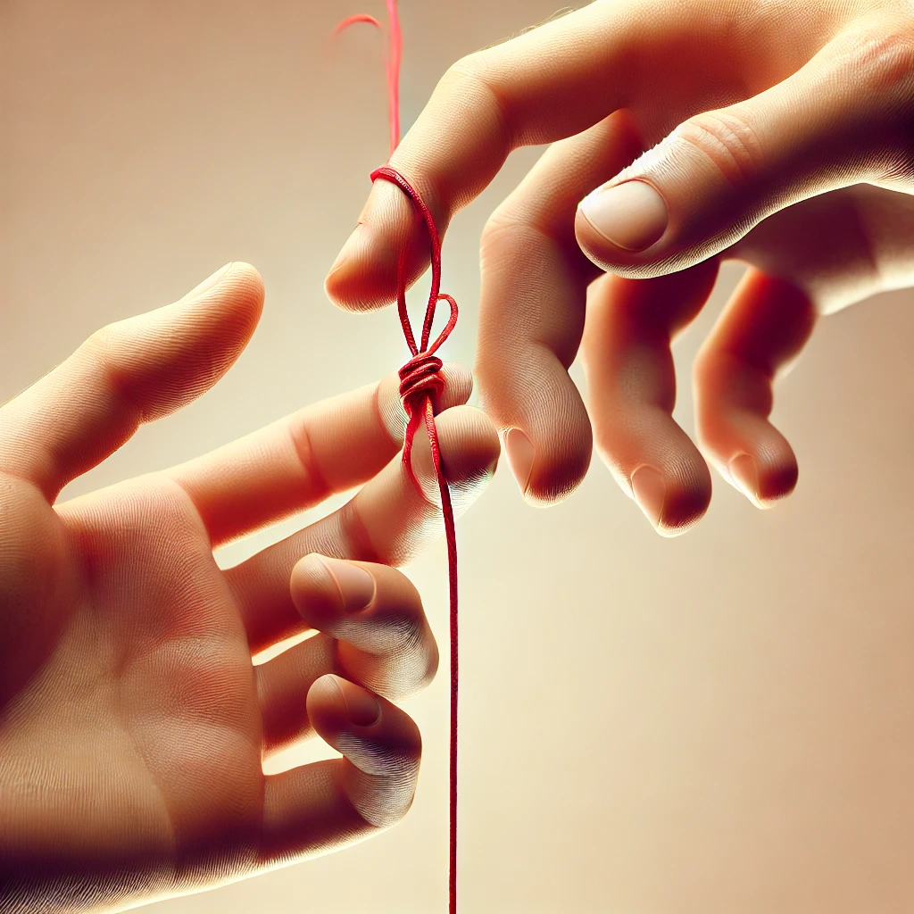

Чувства
А теперь добро пожаловать на страницу, где я постараюсь передать все свои чувства, которые у меня имеются к тебе.
Итак, я уже закидывала удочки на прошлых страницах, но это далеко не все, что испытывала и вот настал момент, когда мне проще поделиться всем, что у меня внутри без попытки что-то скрыть или смущения произнести вслух.
Когда мы только познакомились, то, конечно, я просто относилась к тебе, как к человеку, которому было бы здорово помочь и как-то может даже сопровождать в обучении переодически, если возникали бы вопросы.
Потом я понимала, как мне с каждой секундой с тобой становится все интереснее и интереснее. Знаешь, вот есть книги, которые уже буквально с эпилога завораживают, вот и тут также. А наш эпилог-это наше первоначальное знакомство. Возможно однажды я действительно напишу книгу, посвященную нам с тобой, и это был бы лучший роман за всю мою жизнь.
Практически с самого начала я улетала в мир грез. Практически с самого начала я почувстовала что-то невероятно новое, но если уж ударяться в негативный окрас, то это тотальное безрасудство, ветреность, желание пуститься в любую авантюру вместе с тобой. Я ложилась спать и представляля себе абсолютно новый мир грез, мечтаний и это вызывало абсолютное наслаждение. Я практически с самого начала представляла разные ситуации. Но это тоже своего рода удочка, потому что о всех своих грезах я расскажу тебе попозже. Но ты стал моей новой мечтой. Я понятия не имела, что было бы потом и насколько подобный роман продлился бы, но тем не менее невероятное желание хотя бы немного времени ощутить эту невесомость рядом с тобой... Я готова за это отдать многое, лишь бы понимать, что я прожила свою жизнь не зря, ощутив напоследок ту самую необъяснимую связь между двумя влюбленными.
Наша связь действительно крепла с каждым днем все сильнее и эти рамки стирались. Я уже переставала считать, что это яркий, но вероятно недолгосрочный роман между нами, потому что я начала ощущать, как ты становишься роднее для меня. Возможно, тебе сейчас придется вырывать глаза от того, что я буду описывать, готовься.
Практически с самого начала ты будоражил все женское, что есть во мне. Ты так сильно впился в мои мысли, которые описать кроме как "ярко и страстно" было бы тяжело. Меня до дрожи возбуждал твой ум, твои размышления. Да, это не только восхищало, но и возбуждало. Все это приправлялось твоим низким голосом, которое не оставляло мне шансов. Да, пожалуй, я опишу из своих мечт не только романтичные ситуации, которые были в фантазиях, но и нечто другое. От одной мысли, что твои руки касаются меня, я уже улетала в космос. А когда я представляла твою внешность, то мгновенно мое дыхание застывало, по всему телу пробегало тепло, которое напрочь отключало мое трезвое состояние. Что я только не представляла... А самое главное, что я чувстовала и ощущала в этот момент. Знаешь, можно все скинуть на голод, конечно, но нет, дело абсолютно не в нем. Это тоже какая-то необъяснимая тяга к тебе. Да, может все это звучит пошло и не очень красиво с моей стороны, но я ведь обещала ничего не скрывать. Ты ничего такого не предпринимал, чтоб я вот так заводилась, ты просто являлся тем, каким ты являешься, и не более. И вся эта смесь, которая охарактеризовывало тебя и являлась главным триггером для всех своих фантазий. И это, пожалуй, первое с чего начались мои чувства по отношению к тебе, как к мужчине, а не просто как к интересному собеседнику.
Эта страсть, которую я так желала начала смешиваться с каким-то новым ощущением. Я начинала чувстовать что-то родное, уютное и свое. Вот именно "свое". Я не переставала думать о тебе, как о мужчине, которого я хочу, но вместе с тем добавилось ощущение, что мне хочется отдать тебе все свое тепло, приютить около своего сердца и дать это ощущение безопасности. И тут начала формироваться сильная привязанность, уже совершенно другого уровня, где мне хотелось бы назвать тебя своим убежищем, семьей, островом счастья, уголком уюта, да как угодно, но лишь бы я могла возвращаться туда всегда и ждать тебя там.
И именно к тому моменту я и узнала о возможности приехать к тебе. Клянусь, мне было так плевать, где ты находишься, меня не покидала мысль, что я больше всего хочу побыть с тобой хотя бы немного. Почувствовать твое тепло, дыхание, посмотреть в твои невероятные глаза глубого цвета, прикоснуться к твоим губам и просто хотя бы на минуту улететь в совершенно новый мир, где есть только ты и я, и больше никого. Ты и я...
Эта невероятная смесь тяги к твоей душе и к твоему телу по сей день сводит меня с ума. Я не хочу тебя делить ни с кем, забрать все твои объятия, все поцелуи, всю ласку и оставить себе. Отдать тебе все, что есть без остатка. Просто раствориться до атомов друг в друге. И я стала самым удачливым человеком на свете, потому что я ощущаю эту взаимность.
Мое сердце трепещет от твоих сообщений, голосовых, от твоих фотографий, от всего абсолютно. Ты даришь столько невероятных эмоций, что я уже давно сдалась перед тобой. Я стала уязвимой перед тобой и настолько хрупкой я себя давно не ощущала. Я столько старалась, чтоб обрести как можно больше сил и с твоим появлением вся эта сила обернулась в новое состояние. Сила любви, сила страданий, сила отваги и сила притяжения. Моя сила трансформировалась в то, что я даже не в состоянии описать. Это некая красная нить, которую невозможно порвать ни острым лезвием, ни силой. Ее возможно лишь опустить одному из нас и тогда у этой линии больше не будет второй конечной точки. И это самое страшное, что может произойти. Я до ужаса боюсь, что однажды ты отпустишь эту нить и в этот момент я мгновенно почувствую тотальную пустоту, словно меня бросили на краю этой земли посреди холодной и безжизненой территории.
